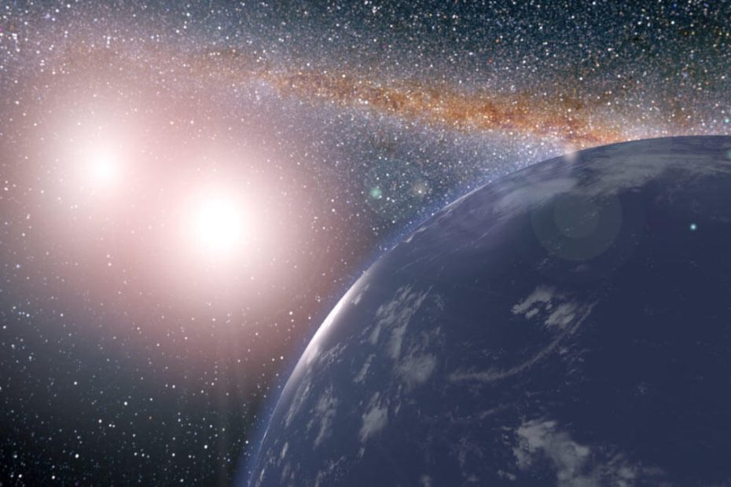

Star Wars ထဲက Luke Skywalker ရဲ့ မူရင်းနေရပ် ဂြိုဟ်ကို မှတ်မိကြ မှာပါ။ တက်တူးအင်း လို့ အမည်ရတဲ့ ဒီဂြိုဟ်ဟာ နေနှစ်စင်း ထွက်တဲ့ ဂြိုဟ်ဖြစ်ပါတယ်။ ဒါမျိုးက ရုပ်ရှင်ထဲမှာသာ ရှိမယ်လို့ ထင်ရပေမယ့် လက်တွေ့မှာတော့ နေနှစ်စင်း ထွက်တဲ့၊ တနည်းအားဖြင့် ကြယ်နှစ်စင်း ပူးနေတဲ့ ကြယ်အဖွဲ့အစည်း အရေအတွက်ဟာ စကြာဝဠာ ထဲမှာ အရေအတွက် အများအပြား ရှိနေပါတယ်။
စကြာဝဠာ ထဲမှာ ရှိတဲ့ ကြယ်နှစ်လုံးပူး အရေအတွက်ဟာ မနည်းပါဘူး။ ဒီ ကြယ်အမွှာ အများစု မှာလဲသူတို့ကို ပတ်နေတဲ့ ဂြိုဟ်တွေ ရှိကြပါတယ်။ ဒါပေမယ့် အခုအထိ သိပ္ပံ ပညာရှင် တွေဟာ ဒီ နေနှစ်စင်း ထွက်တဲ့ ဂြိုဟ်တွေပေါ်က အခြေအနေတွေဟာ သက်ရှိတွေ အသက်ရှင်သန် ပေါက်ပွား နိုင်ဖို့ အခြေအနေ ပေးမပေးကို မသိခဲ့ ကြပါဘူး။
ဒါပေမယ့် အခုအခါ computer simulation ပြုလုပ်ချက် တွေအရ ဒီလို နေနှစ်စင်း ထွက်တဲ့ ဂြိုဟ်တွေပေါ်မှာလဲ သက်ရှိတွေ အသက်ရှင်သန်နိုင် လိမ့်မယ်ဆိုတာ သိရှိလာရပါတယ်။
ဒီလို ကြယ်အမွှာပူးတွေကို ပတ်နေတဲ့ ကမ္ဘာနဲ့ တူတဲ့ ဂြိုဟ်တွေဟာ တည်ငြိမ်တဲ့ ပတ်လမ်းမှာ အနည်းဆုံး နှစ်သန်း ၁,၀၀၀ လောက် တည်ငြိမ်စွာ ပတ်နေနိုင် ကြမှာ ဖြစ်ပါတယ်။ ဒီလို တည်ငြိမ်တဲ့ ပတ်လမ်း ရှိခြင်းဟာ အသက်ဇီဝ ဖြစ်ထွန်းဖို့ လုံလောက်တဲ့ အခြေခံ ဖြစ်တယ်လို့ ဆိုပါတယ်။
သိပ္ပံ ပညာရှင် တွေက သူတို့ရဲ့ တွေ့ရှိချက် တွေကို ဇန်နဝါရီ ၁၁ ရက်နေ့မှာ ကျင်းပခဲ့တဲ့ American Astronomical Society အသင်းကြီးရဲ့ အစည်းအဝေးမှာ တင်ပြခဲ့ ကြတာ ဖြစ်ပါတယ်။ သူတို့က အကယ်လို့သာ ဒီလို ဂြိုဟ်မျိုးဟာ မပူလွန်း မအေးလွန်းပဲ မျှတတဲ့ အပူချိန် ရရှိခဲ့မယ် ဆိုရင် အသက်ဇီဝ ရှင်သန်ပေါက်ပွားဖို့ အခွင့်အလမ်း ရှိလိမ်မယ်လို့ ဆိုပါတယ်။
တွက်ချက်မှု တွေအရ တည်ငြိမ်တဲ့ ပတ်လမ်းရှိတဲ့ ဂြိုဟ်တွေရဲ့ ၁၅ ရာခိုင်နှုန်းဟာ habitable zone ခေါ် အပူအအေး သမမျှတတဲ့ ရပ်ဝန်းမှာ တည်ရှိနေကြပါတယ်။
သုတေသီ တွေဟာ ကမ္ဘာနဲ့ အလားတူတဲ့ ဂြိုဟ်ရှိတဲ့ ကြယ်အမွှာစုံတွဲ ဖွဲ့စည်းပုံ အမျိုး ၄,၀၀၀ ကို ကွန်ပြူတာနဲ့ အတုပြုလုပ် ဖန်တီးကြည့် ခဲ့ကြပါတယ်။ သူတို့ဟာ ကြယ်တွေရဲ့ ဒြပ်ထုကို အမျိုးမျိုးပြောင်းကြည့်ကြတယ်၊ ပြီးတော့ ကြယ်အချင်းချင်း ပတ်တဲ့ ပတ်လမ်းရဲ့ အရွယ်အစား နဲ့ ပုံသဏ္ဍန် ကိုလဲ ပြောင်းကြည့်ကြတယ်။ နောက် ပတ်နေတဲ့ ဂြိုဟ်ရဲ့ ပတ်လမ်း အရွယ်အစားကို လဲ ပြောင်းပြီး စမ်းကြည့် ကြပါတယ်။
ဒီ့နောက် ကွန်ပြူတာ ထဲမှာ ဒီဂြိုဟ်တွေရဲ့ ပတ်လမ်းကို နောက်ထပ် နှစ် သန်း ၁,၀၀၀ အထိ တွက်ချက် ယူခဲ့ ကြပါတယ်။ ဒီကာလ အတွင်းမှာ ပတ်နေတဲ့ ဂြိုဟ်ဟာ သူ့မူလ ပတ်လမ်းထဲမှာ ရှိနေသေးလား၊ အပြင်ကို လွင့်ထွက်သွားလား၊ အစရှိတာတွေကို အသေးစိတ် လေ့လာ ခဲ့ကြပါတယ်။
ဒီလို စမ်းသပ်တဲ့ အခါ ဂြိုဟ် ၈ စင်းမှာ ၁ စင်းဟာ မူလလမ်းကြောင်းက သွေဖည်ပြီး ကြယ်အဖွဲ့အစည်းရဲ့ အပြင်ဖက် လွင့်ထွက် သွားပါတယ်။ ကျန်တာတွေက မူလ လမ်းကြောင်းအတိုင်း ဆက်လက် လည်ပတ်နေပြီး ၁၀ ပုံ ၁ ပုံကတော့ habitable zone ထဲမှာ လှည့်ပတ်နေကြပါတယ်။
နောက်ပြီး ဂြိုဟ် ၄,၀၀၀ အနက်က ၅၀၀ ဟာ habitable zone အတွင်း သူတို့သက်တမ်းရဲ့ ၈၀ ရာခိုင်နှုန်းထိအောင် နေထိုင် ခဲ့ကြတယ် ဆိုတာ တွေ့ရှိခဲ့ ကြပါတယ်။
ဒါပေမယ့် habitable zone ထဲက ဂြိုဟ်တွေရဲ့ အပူချိန်ဟာ ရေခဲမှတ် ကနေ ရေဆူမှတ် အထိ ကွာခြားနိုင်ပါတယ်တဲ့။ ဒီလို ဖြစ်ရတာက အခု simulation မှာ လွယ်ကူအောင် ဆိုပြီး လေထု မရှိတဲ့ ဂြိုဟ်တွေကို အသုံးပြု စမ်းသပ်ခဲ့ ကြတာမို့ပါ။
အကယ်လို့ လေထုရှိတဲ့ ဂြိုဟ်တွေနဲ့ simulation လုပ်မယ် ဆိုရင်တော့ ဒီ့ထက် ပိုမိုတိကျတဲ့ အဖြေကို ရရှိလာမှာ ဖြစ်ပါတယ်။ ပြီးတော့ အသက်ရှင်သန်နိုင်တဲ့ ဂြိုဟ်အရေအတွက်လဲပိုတိုးလာမှာ ဖြစ်တယ်လို့ ဆိုပါတယ်။
လက်ရှိမှာ ပညာရှင် တွေဟာ ဒီ့ထက်ပို အနုစိတ်တဲ့ simulation တခုကို ပိုအချိန်ကြာကြာ ပြုလုပ်ဖို့ စီစဉ်နေပါတယ်။
ပညာရှင် တွေကတော့ ယခုတွေ့ရှိချက်ဟာ ကြယ်အမွှာတွေ နားမှာ သက်ရှိတွေ ရှာဖွေဖို့ ကြိုးပမ်းနေတဲ့ လုပ်ငန်းအတွက် အများကြီး အထောက်အပံ့ ရလိမ့်လို့ ဆိုပါတယ်။
Ref: Lots of Tatooine-like planets around binary stars may be habitable Science News
နေနှစ်စင်း ထွက်တဲ့ ဂြိုဟ်တွေပေါ်မှာလဲ သက်ရှိတွေ ရှိနိုင်တယ်

May 12, 2023
Other Posts
- နေအဖွဲ့အစည်း ပြင်ပက ဂြိုဟ်များ
- ကမ္ဘာ့ သံလိုက်စက်ကွင်း ပြောင်းပြန်ဖြစ်ခဲ့လျှင်
- ကမ္ဘာ့လေထု အထက်လွှာက ထူးဆန်းတဲ့ အပြာရောင် မိုးကြိုး တန်း
- မေ ၃၁ မှာ မြင်တွေ့ရ နိုင်တဲ့ ကြယ်မိုး
- ၂၀၂၇ မှာ ဖွင့်မယ်ဆိုတဲ့ ကမ္ဘာ့ ပထမဆုံး အာကာသ ဟိုတယ်
- အချိန်ပြောင်းပြန် သွားနေတဲ့ ဆန့်ကျင်ဖက် စကြာဝဠာ
- Google Play Store မှ App ၇၀၀,၀၀၀ ကျော်ကို ယမန်နှစ်က ဖယ်ရှားခဲ့ကြောင်း Google ထုတ်ပြန်
- ပိုးစားသောသွားများကို အသစ်ပြန်ပေါက်အောင် လုပ်နိုင်တော့မည်
- X-1 ပြင်းအားရှိ နေမုန်တိုင်း ရောက်ရှိလာမည်ဟု နာဆာ သတိပေး
- ပိရမစ် တွေကို ဘယ်လို တည်ဆောက်ခဲ့သလဲ